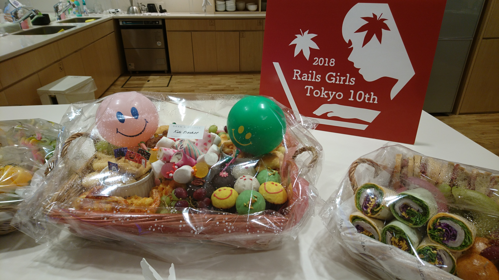

Rails Girls Tokyo 10th レポート
初稿：2019-01-27
Rails Girls Tokyo 10th レポート
はじめに
2018年10月12日（金）と13日（土）に株式会社クックパッド様にて、Rails Girls Tokyo 10th が開催されました。この記事は2日目のワークショップにコーチとして参加した筆者 katorie がイベントの概要と個人的な感想をまとめたものです。
なお、記事中の写真はデザイナーの江本さんが撮影してくださったものをお借りました。ありがとうございました！！
Rails Girlsとは
Rails Girlsはリンダ・リウカスさんによってスタートした、プログラミング未経験の女性を主な対象としている Ruby on Rails のワークショップです。世界各地で開催されていますが、日本国内においても東京だけでなく、北は札幌、南は沖縄までさまざまな都市で回を重ねており、数多くの女性たちが「はじめて自分でWebアプリケーションを作る楽しみ」を経験しています。
ワークショップは2日にかけて開催され、初日は「インストール・デイ」として主に環境構築をおこなったり、Rubyについて話をしたり、2日目にアプリケーションを作るための準備をします。そしていよいよ2日目ははじめてのWebアプリケーションを作っていきます！
10回目の東京開催
Rails Girls は特定の企業・団体・個人が開催しているのではなく、「やりたい！」と手を挙げた人がオーガナイザーになることができます。今回は Rails Girls Tokyo 8th に参加したneko314さんが手を挙げ、開催の運びとなりました。詳しくはご本人のブログ記事をご覧ください。
ちなみに、Tokyoだけかもしれませんが、参加者のことを「Girlsの皆さん」と呼ぶことがあるので、本記事の中でもそう呼びたいと思います！
ワークショップの様子
朝、Girlsの皆さんは、事前にオーガナイザーによって振り分けられたグループごとに集まって、少し緊張しているような、わくわくしているような面持ちで会の始まりを待っていました。
オーガナイザーのneko314さんから開会の言葉では、開催に至った経緯や想いが語られ、その素敵なお話にGirlsの皆さんだけでなく、コーチやスタッフの皆さんも胸が熱くなりました。

続いて、RubyコミッターでもありRailsコミッターでもある @a_matsuda さんから「RubyやRailsについてのお話」では、Gilrs皆さんがこれから触れるRubyやRailsがどんなソフトウェアなのか、それらを取り巻くコミュニティについてお話がありました。

その後、恒例の「フライデーハグ」を撮影して、いよいよワークショップ開始です！！

ワークショップは、公式サイトにあるチュートリアルに沿って進めていきますが、進め方はグループごとにコーチたちの話し合いでそれぞれ決めていきました。
私がコーチをつとめた「すもも」グループは、全体で一緒にチュートリアルを進めながらも、常に1人の参加者に対して1人のコーチがつき、補足説明をしていくスタイルでした。 （ちなみにグループ名は毎回オーガナイザーが好きなもののグループ名を用意するのですが、今回は秋の果物がグループ名になっていました！）

画用紙とサインペンを使いながら、説明をしている様子です。
途中、お昼ごはんを挟みますが、今回はEricさん(@drbrain)がご支援くださいました！

Girlsの皆さんは、はじめてWebアプリケーションを作ることにチャレンジしているので、はじめて聞く言葉を理解したり、はじめて操作するターミナルに四苦八苦したり、出だしから比較的ハードだと思います。
でもコーチが全力でサポートしながら、はじめてのWebアプリケーションをHerokuにデプロイして、この笑顔！！

スタッフの方々が協力して、イベントのロゴクッキーを用意したり、素敵なケータリングを手配したり、会場の装飾をしたり…Girlsの皆さんがリラックスして楽しめるよう、たくさん工夫がされていました。


おわりに
ごく簡単にではありますが、Rails Girls Tokyo 10thの様子をレポートしました。 私自身、コーチとして参加したため、当日はどうしてもグループのメンバーにチュートリアルの説明をすることに一生懸命になってしまいましたが、neko314さんの願いとして「より多くの参加者の方と話してほしい」ということを伺っていましたので、休憩時間やアフターパーティーでは他のグループに参加しているGirlsの皆さんとも話すよう心がけました。 業務でエンジニアの方と仕事をする機会が多いため、エンジニアがどんなことをしているのか知りたくて参加した、という方や、プログラマを目指して勉強を始めた、という方。いろんな方とお話することができました。 私も過去にこのイベントに参加して、すごくすごく楽しくて、それがきっかけでエンジニアという仕事に興味を持つようになりました。 はじめて触れるWebアプリケーションを作るわくわく感と、それを体験したRails Girlsというコミュニティが、Girlsの皆さんの心に残ることを願います。
このイベントのすごく素敵だなと思うところは「過去の参加者がオーガナイザー/スタッフ/コーチとして帰ってくる」ところです。 おそらく皆さんに共通している想いは「自分が楽しかったから何かしら還元したい」とか「この楽しさを伝えたい」とか「それらの想いを持つ人たちを支援したい」という気持ちではないでしょうか。 きっとこれらの想いが繋がって、毎回素敵な会が日本各地、世界各地に広がり続けているのではないかと思います。 ご賛同くださるスポンサー企業様へも感謝のきもちでいっぱいです。
この記事を読んでご興味を持たれた方がいらっしゃったら、ぜひお住いの地域のRails Girlsのイベントに（いろんなかたちで）ご参加ください！！
著者について
katorie(@katorie)
株式会社ユビレジのエンジニア。Rails Girls Tokyo 2ndに参加したことがきっかけでプログラマに。趣味はお茶をいれること。